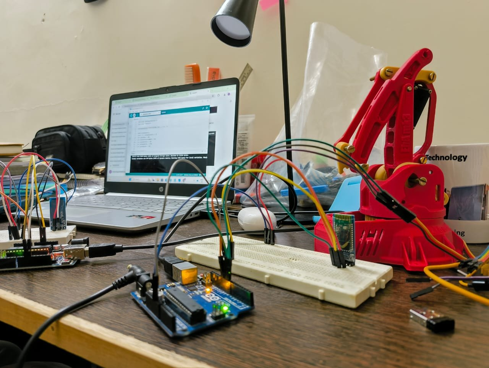
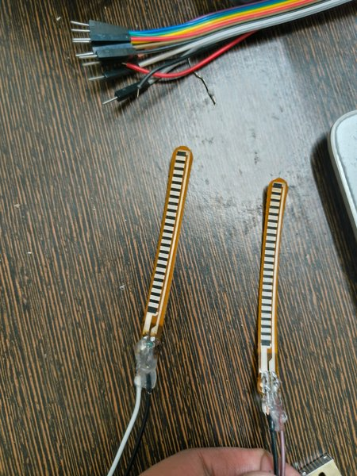
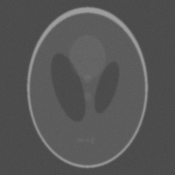

IIT Jodhpur and earlier projects
Embedded systems · IIT Jodhpur
Robotic arm that copies your hand


Bend your fingers and the arm follows. Flex sensors on a glove change their resistance as each finger bends; an Arduino UNO turns them into servo angles, and an HC-05 Bluetooth module sends the commands wirelessly. This kind of control lets a person work from a safe distance, for example in bomb disposal.
Image processing · PLOS ONE 2025
Clearer medical images


Dark, low-contrast scans hide small details. Using fractional derivatives, this method sharpens edges and brings out texture in single-channel medical images, so they are easier to read. The original is on the left and the enhanced image on the right. Paper